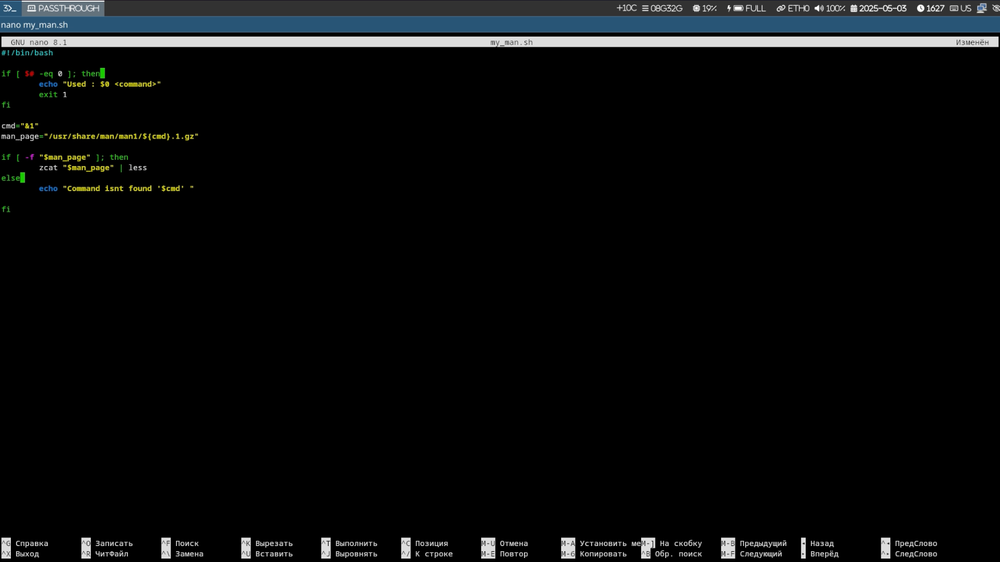

Цель работы
Изучение скриптов оболочки и демонстрация их функциональности через
практические примеры.
Задание
- Создание пользовательского просмотрщика страниц руководства
(my_man.sh)
- Создание генератора случайных букв (random_letters.sh)
- Создание базовой реализации семафора (samaphore.sh)
Пользовательский просмотрщик страниц руководства
Код скрипта my_man.sh
#!/bin/bash
if [ $# -eq 0 ]; then
echo "Used : $0 <command>"
exit 1
fi
cmd="$1"
man_page="/usr/share/man/man1/${cmd}.1.gz"
if [ -f "$man_page" ]; then
zcat "$man_page" | less
else
echo "Command isnt found '$cmd' "
fi
Назначение и
функциональность
- Назначение: Упрощенный просмотрщик страниц
руководства
- Функциональность:
- Проверяет, предоставлен ли аргумент команды
- Ищет страницу руководства в стандартном месте
(/usr/share/man/man1/)
- Если найдено, использует
zcat для распаковки и
less для отображения страницы руководства
- В противном случае отображает сообщение об ошибке

Вывод скрипта My Man
Генератор случайных букв
Код скрипта
random_letters.sh
#!/bin/bash
length=${1:-10}
generate_letter() {
rand=$(( RANDOM % 26 ))
printf "\\x$(printf %02x $((65 + rand)))"
}
result=""
for ((i=0; i<length; i++)); do
result+=$(generate_letter)
done
echo $result
Назначение и
функциональность
- Назначение: Генерирует случайную строку из
заглавных букв
- Функциональность:
- Принимает необязательный аргумент для длины строки (по умолчанию
10)
- Использует функцию для генерации случайных заглавных букв ASCII
- Объединяет буквы в результирующую строку
- Выводит случайную строку
 Вывод скрипта случайных букв
Вывод скрипта случайных букв
Базовая реализация семафора
Код скрипта samaphore.sh
#!/bin/bash
# variables
t1=5
t2=3
sem_file="/tmp/semaphore.lock"
# our function
wait_for_semaphore() {
echo "Wainting for the resource..."
while [ -f "$sem_file" ] && [ $t1 -gt 0 ]; do
sleep 1
((t1--))
done
if [ ! -f "$sem_file" ]; then
touch "$sem_file"
echo "Process captured resouces"
return 0
else
echo " Couldnt capture the resouces"
exit 1
fi
}
# capturing resources
wait_for_semaphore
# usinng the resources
echo "Used resource ($$) in $t2 sec.."
sleep $t2
# freeing resourcces
rm "$sem_file"
echo "Resourcees freed $$"
Назначение и
функциональность
- Назначение: Демонстрирует базовую реализацию
семафора в bash для управления ресурсами
- Функциональность:
- Использует файл блокировки (/tmp/semaphore.lock) в качестве
семафора
- Реализует механизм ожидания с таймаутом (5 секунд)
- Когда процесс получает ресурс, он создает файл блокировки
- Процесс использует ресурс в течение указанного времени (3
секунды)
- После использования ресурса удаляет файл блокировки для освобождения
ресурса
- Включает ID процесса в выходные сообщения для идентификации
 Вывод скрипта семафора
Вывод скрипта семафора
Дополнительные демонстрации
Другие изображения
Также есть другие PNG-файлы, которые показывают различные запуски или
аспекты скриптов:
- contentrandom.png - Показывает дополнительный вывод
из скрипта случайных букв
- samapohore.png - Показывает еще одно выполнение
скрипта семафора
Резюме
Основные концепции
программирования в bash
Эта лабораторная работа сосредоточена на написании скриптов bash с
тремя основными примерами:
- Обработка файлов и выполнение команд
(my_man.sh)
- Генерация случайных чисел и манипуляции со строками
(random_letters.sh)
- Синхронизация процессов и управление ресурсами
(samaphore.sh)
Визуальные доказательства
PNG-файлы предоставляют визуальные доказательства выполнения и вывода
скриптов, помогая понять их функциональность.